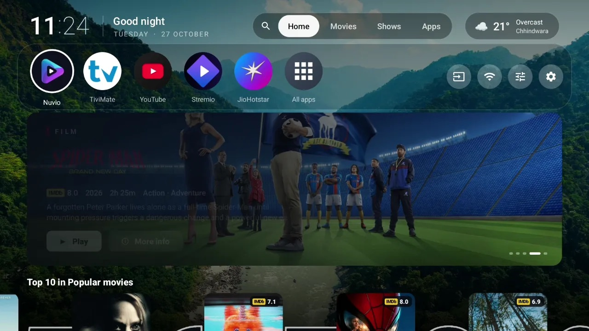

Flix Launcher.
Your TV, without the ads.
A free, open-source home screen for Android TV and Google TV. Your apps, films and shows on one cinematic screen, about 700 KB, light even on 2 GB TVs.

Everything on one screen
Replace the stock Google TV launcher with a calm, fast home screen that puts what you watch first.
No ads, no tracking
No sponsored rows, no analytics. Just your apps and what you watch.
Resume in one press
Continue watching and Up next from your Nuvio account, right on the home screen.
Films and shows
Rows from your Stremio addons, a Top 10, trailers on focus and a featured carousel.
Netflix-style search
An on-screen keyboard for the remote, voice search, and results from your own addons.
Aerial backgrounds
Apple TV and Fire TV aerial videos or daily Bing photos, streamed, never stored.
Tiny and fast
About 700 KB and around 54 MB of memory on a 2 GB TV. Themes, weather and a clock included.
Works on your TV
Any Android TV or Google TV device running Android 9 or later.
Install in a minute
Flix isn't on the Play Store, so you sideload it once. After that it updates itself.
- On the TV, install Downloader (or any file manager) and allow it to install unknown apps.
- Open the latest release and install
flix-launcher-*.apk. Or from a computer:adb install flix-launcher-*.apk - Open Flix and follow the setup: connect Nuvio, choose your rows, then switch on Flix Launcher in Settings → Accessibility so the Home button opens Flix.

Questions
How do I remove ads from the Google TV home screen?
Install Flix Launcher and switch it on in Settings → Accessibility. The Home button then opens Flix, which has no ads or sponsored rows. The stock launcher stays installed, unused.
Does it work with Nuvio and Stremio addons?
Yes. Sign in with Nuvio for Continue watching and your addons' rows. Titles open in Nuvio, including the Play Store version and the NuvioPlusIPTV fork.
Is it free?
Yes, free and open source under the MIT licence.
How does it update?
New versions download in the background from GitHub. An "Update ready" pill appears on the home screen; it installs when the TV is idle or when you press OK.
How do I go back to the stock launcher?
Switch off Flix Launcher in Settings → Accessibility, or uninstall it.